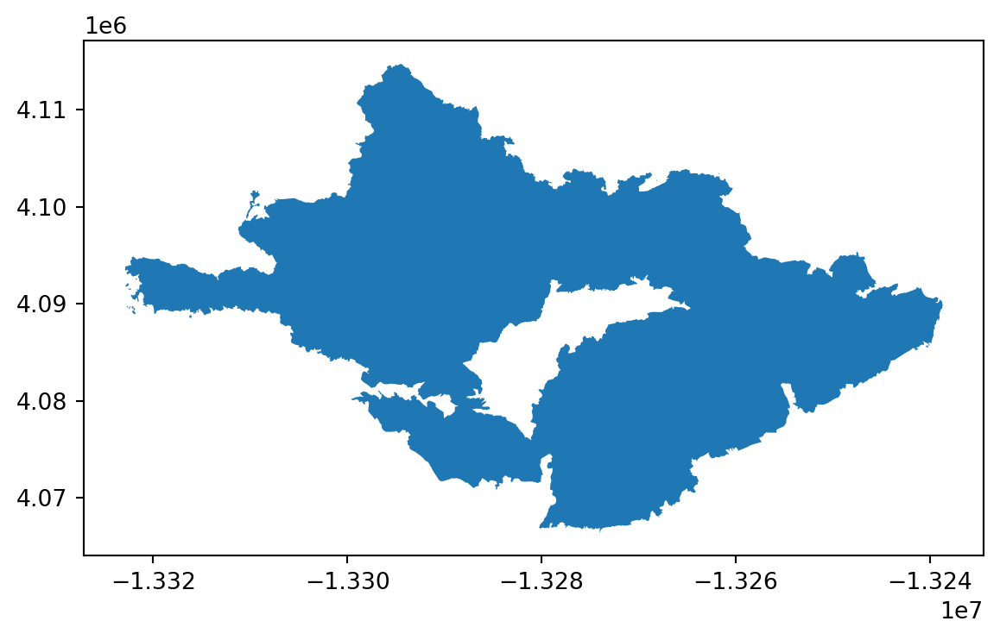
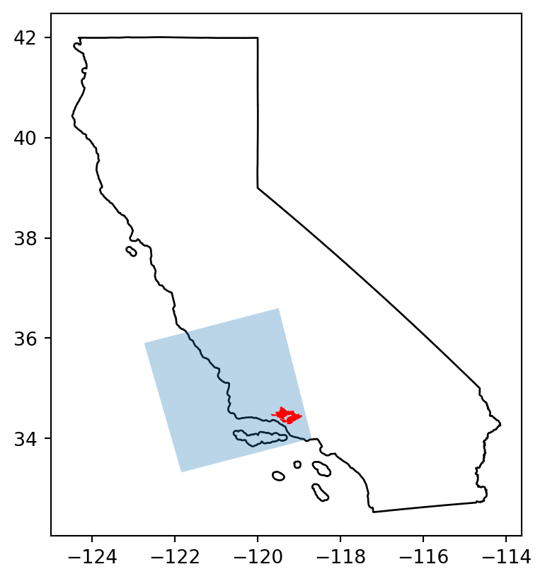
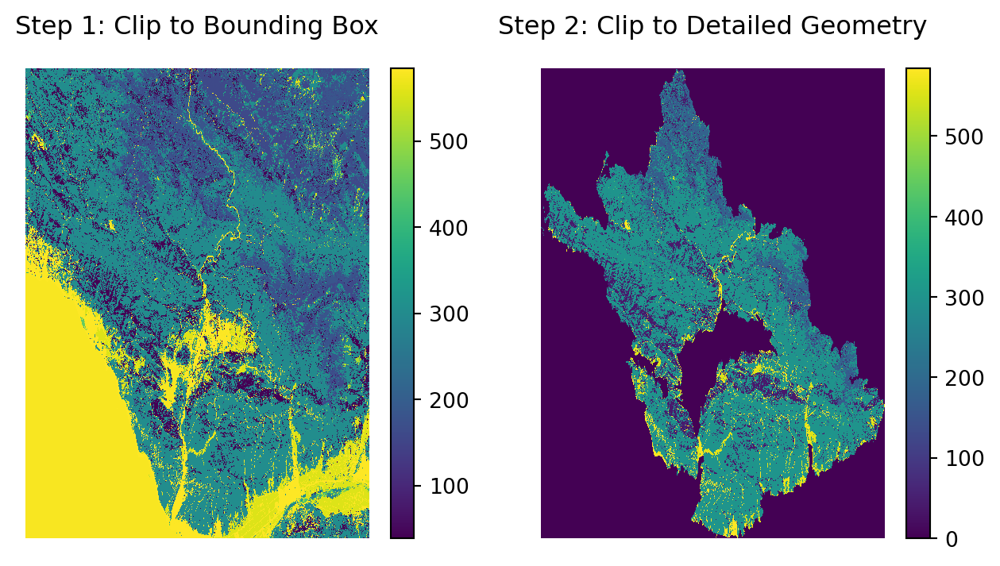
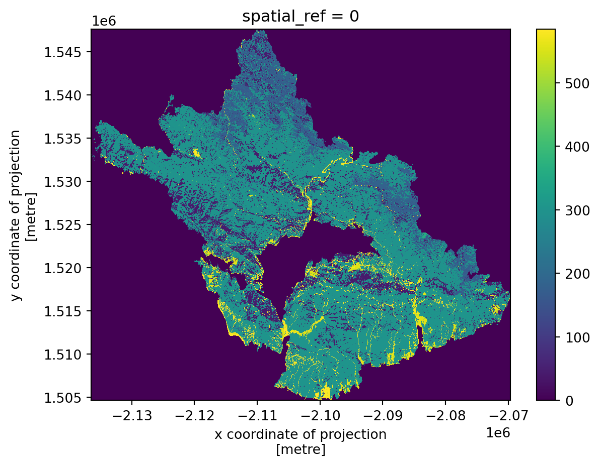
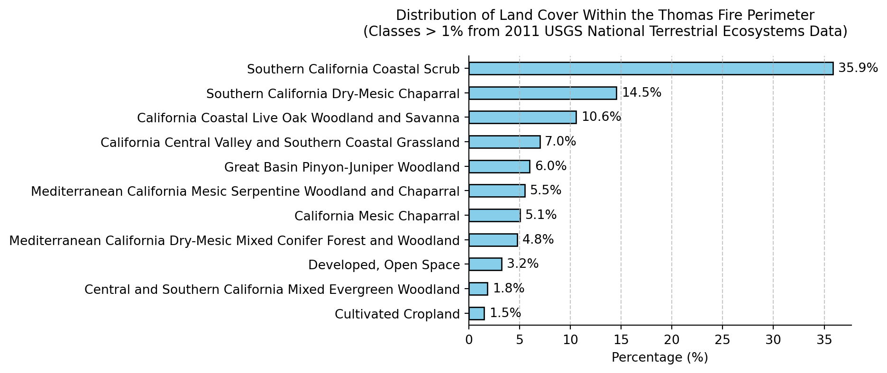

import os
import numpy as np
import pandas as pd
import matplotlib.pyplot as plt
import geopandas as gpd
import rioxarray as rioxr
from shapely import box
import pystac_client
import planetary_computer
from IPython.display import Image 16 Land cover statistics
About the data
In this lesson we will use two datasets.
The first one is GAP/LANDFIRE National Terrestrial Ecosystems data for 2011 [1], from the US Geological Survey (USGS). This is a categorical raster with a 30 m x 30 m pixel resolution representing highly thematically detailed land cover map of the U.S. We will access this data through the Microsoft Planetary Computer (MPC) data catalog. The class names and corresponding codes have been saved to a separete CSV to simplify access in this lesson. Further information on how to access the classes directly from the data are available in the MPC catalog.
The second dataset is a shapefile with the perimeters for 2017 California fires. This data was extracted from the CALFIRE’s Historical Wildland Fire Perimeters.
Fire perimeter preparation
Let’s start by importing the necessary libraries:
Then import and select the Thomas Fire within the fire perimeters data:
fire_perimeters = gpd.read_file(os.path.join('data',
'California_Fire_Perimeters_2017',
'California_Fire_Perimeters_2017.shp')
)
thomas_fire = fire_perimeters[fire_perimeters['FIRE_NAME']=='THOMAS']
# Examin fire perimeter data
thomas_fire.crs
thomas_fire.plot()
Catalog search
Our goal is to retrieve the National Terrestrial Ecosystems data over the fire perimeter. In the last lesson we used GeoJSON-type dictionary to do the catalog search. Here we will use a list [xmin, ymin, xmax, ymax] with the coordinate values defining the four corners of the region we want to search data over. Just as the GeoJSON, these coordinates have to be in the EPSG:4326 CRS.
Our bounding box will come from the Thomas Fire perimeter. Notice we use method chaining to reproject and extract the bounds.
# Create bounding box for search
thomas_fire_bbox = list(thomas_fire.to_crs('epsg:4326') # Reproject for search
.total_bounds
)
thomas_fire_bbox[-119.68162520650904,
34.27989979600195,
-118.92518097019486,
34.63745683414112]Next, we connect to the Microsoft Planetary Computer data catalog and perform the search. The collection ID for the National Terrestrial Ecosystems data is gap:
# Open MPC data catalog
catalog = pystac_client.Client.open(
"https://planetarycomputer.microsoft.com/api/stac/v1",
modifier=planetary_computer.sign_inplace,
)
# Search MPC catalog
search = catalog.search(collections=['gap'],
bbox=thomas_fire_bbox)
# Retrieve search items
items = search.item_collection()
print(f"Returned {len(items)} Items")
itemsReturned 1 Items- type "FeatureCollection"
features [] 1 items
0
- type "Feature"
- stac_version "1.0.0"
- id "gap_landfire_nationalterrestrialecosystems2011_-2361135_1762215_-2061135_1462215"
properties
- datetime "2011-12-31T00:00:00Z"
- proj:wkt2 "PROJCS["NAD83 / Conus Albers",GEOGCS["NAD83",DATUM["North_American_Datum_1983",SPHEROID["GRS 1980",6378137,298.257222101,AUTHORITY["EPSG","7019"]],AUTHORITY["EPSG","6269"]],PRIMEM["Greenwich",0,AUTHORITY["EPSG","8901"]],UNIT["degree",0.0174532925199433,AUTHORITY["EPSG","9122"]],AUTHORITY["EPSG","4269"]],PROJECTION["Albers_Conic_Equal_Area"],PARAMETER["latitude_of_center",23],PARAMETER["longitude_of_center",-96],PARAMETER["standard_parallel_1",29.5],PARAMETER["standard_parallel_2",45.5],PARAMETER["false_easting",0],PARAMETER["false_northing",0],UNIT["metre",1,AUTHORITY["EPSG","9001"]],AXIS["Easting",EAST],AXIS["Northing",NORTH],AUTHORITY["EPSG","5070"]]"
- label:type "raster"
proj:shape [] 2 items
- 0 10000
- 1 10000
- end_datetime "2011-12-31T00:00:00+00:00"
label:classes [] 1 items
0
- name ""
classes [] 585 items
- 0 "0"
- 1 "South Florida Bayhead Swamp"
- 2 "South Florida Cypress Dome"
- 3 "South Florida Dwarf Cypress Savanna"
- 4 "South Florida Mangrove Swamp"
- 5 "South Florida Hardwood Hammock"
- 6 "Southeast Florida Coastal Strand and Maritime Hammock"
- 7 "Southwest Florida Coastal Strand and Maritime Hammock"
- 8 "South Florida Pine Rockland"
- 9 "Atlantic Coastal Plain Fall-line Sandhills Longleaf Pine Woodland - Open Understory"
- 10 "Atlantic Coastal Plain Fall-line Sandhills Longleaf Pine Woodland - Scrub/Shrub Understory"
- 11 "Atlantic Coastal Plain Upland Longleaf Pine Woodland"
- 12 "Atlantic Coastal Plain Xeric River Dune"
- 13 "East Gulf Coastal Plain Interior Upland Longleaf Pine Woodland - Open Understory Modifier"
- 14 "East Gulf Coastal Plain Interior Upland Longleaf Pine Woodland - Scrub/Shrub Modifier"
- 15 "Florida Longleaf Pine Sandhill - Scrub/Shrub Understory Modifier"
- 16 "Florida Longleaf Pine Sandhill- Open Understory Modifier"
- 17 "West Gulf Coastal Plain Upland Longleaf Pine Forest and Woodland"
- 18 "Atlantic Coastal Plain Central Maritime Forest"
- 19 "Atlantic Coastal Plain Southern Maritime Forest"
- 20 "Central and South Texas Coastal Fringe Forest and Woodland"
- 21 "East Gulf Coastal Plain Limestone Forest"
- 22 "East Gulf Coastal Plain Maritime Forest"
- 23 "East Gulf Coastal Plain Southern Loess Bluff Forest"
- 24 "East Gulf Coastal Plain Southern Mesic Slope Forest"
- 25 "Mississippi Delta Maritime Forest"
- 26 "Southern Coastal Plain Dry Upland Hardwood Forest"
- 27 "Southern Coastal Plain Oak Dome and Hammock"
- 28 "West Gulf Coastal Plain Chenier and Upper Texas Coastal Fringe Forest and Woodland"
- 29 "West Gulf Coastal Plain Mesic Hardwood Forest"
- 30 "East-Central Texas Plains Pine Forest and Woodland"
- 31 "West Gulf Coastal Plain Pine-Hardwood Forest"
- 32 "West Gulf Coastal Plain Sandhill Oak and Shortleaf Pine Forest and Woodland"
- 33 "Atlantic Coastal Plain Fall-Line Sandhills Longleaf Pine Woodland - Loblolly Modifier"
- 34 "Deciduous Plantations"
- 35 "East Gulf Coastal Plain Interior Upland Longleaf Pine Woodland - Loblolly Modifier"
- 36 "East Gulf Coastal Plain Interior Upland Longleaf Pine Woodland - Offsite Hardwood Modifier"
- 37 "East Gulf Coastal Plain Near-Coast Pine Flatwoods - Offsite Hardwood Modifier"
- 38 "Evergreen Plantation or Managed Pine"
- 39 "California Central Valley Mixed Oak Savanna"
- 40 "California Coastal Closed-Cone Conifer Forest and Woodland"
- 41 "California Coastal Live Oak Woodland and Savanna"
- 42 "California Lower Montane Blue Oak-Foothill Pine Woodland and Savanna"
- 43 "Central and Southern California Mixed Evergreen Woodland"
- 44 "Mediterranean California Lower Montane Black Oak-Conifer Forest and Woodland"
- 45 "Southern California Oak Woodland and Savanna"
- 46 "Madrean Encinal"
- 47 "Madrean Pinyon-Juniper Woodland"
- 48 "Madrean Pine-Oak Forest and Woodland"
- 49 "Madrean Upper Montane Conifer-Oak Forest and Woodland"
- 50 "Edwards Plateau Dry-Mesic Slope Forest and Woodland"
- 51 "Edwards Plateau Limestone Savanna and Woodland"
- 52 "Edwards Plateau Mesic Canyon"
- 53 "Llano Uplift Acidic Forest, Woodland and Glade"
- 54 "East Cascades Oak-Ponderosa Pine Forest and Woodland"
- 55 "Mediterranean California Mixed Evergreen Forest"
- 56 "Mediterranean California Mixed Oak Woodland"
- 57 "North Pacific Dry Douglas-fir-(Madrone) Forest and Woodland"
- 58 "North Pacific Oak Woodland"
- 59 "Edwards Plateau Limestone Shrubland"
- 60 "Allegheny-Cumberland Dry Oak Forest and Woodland - Hardwood"
- 61 "Allegheny-Cumberland Dry Oak Forest and Woodland - Pine Modifier"
- 62 "Central and Southern Appalachian Montane Oak Forest"
- 63 "Central and Southern Appalachian Northern Hardwood Forest"
- 64 "Central Appalachian Oak and Pine Forest"
- 65 "Crosstimbers Oak Forest and Woodland"
- 66 "East Gulf Coastal Plain Black Belt Calcareous Prairie and Woodland - Woodland Modifier"
- 67 "East Gulf Coastal Plain Northern Dry Upland Hardwood Forest"
- 68 "East Gulf Coastal Plain Northern Loess Plain Oak-Hickory Upland - Hardwood Modifier"
- 69 "East Gulf Coastal Plain Northern Loess Plain Oak-Hickory Upland - Juniper Modifier"
- 70 "East-Central Texas Plains Post Oak Savanna and Woodland"
- 71 "Lower Mississippi River Dune Woodland and Forest"
- 72 "Mississippi River Alluvial Plain Dry-Mesic Loess Slope Forest"
- 73 "North-Central Interior Dry Oak Forest and Woodland"
- 74 "North-Central Interior Dry-Mesic Oak Forest and Woodland"
- 75 "Northeastern Interior Dry Oak Forest - Mixed Modifier"
- 76 "Northeastern Interior Dry Oak Forest - Virginia/Pitch Pine Modifier"
- 77 "Northeastern Interior Dry Oak Forest-Hardwood Modifier"
- 78 "Northeastern Interior Dry-Mesic Oak Forest"
- 79 "Northern Atlantic Coastal Plain Dry Hardwood Forest"
- 80 "Crowleys Ridge Sand Forest"
- 81 "Ouachita Montane Oak Forest"
- 82 "Ozark-Ouachita Dry Oak Woodland"
- 83 "Ozark-Ouachita Dry-Mesic Oak Forest"
- 84 "Southern and Central Appalachian Oak Forest"
- 85 "Southern and Central Appalachian Oak Forest - Xeric"
- 86 "Southern Interior Low Plateau Dry-Mesic Oak Forest"
- 87 "Southern Ridge and Valley Dry Calcareous Forest"
- 88 "Southern Ridge and Valley Dry Calcareous Forest - Pine modifier"
- 89 "East Gulf Coastal Plain Northern Dry Upland Hardwood Forest - Offsite Pine Modifier"
- 90 "Managed Tree Plantation"
- 91 "Ruderal forest"
- 92 "Southern Piedmont Dry Oak-(Pine) Forest - Loblolly Pine Modifier"
- 93 "Acadian Low-Elevation Spruce-Fir-Hardwood Forest"
- 94 "Acadian-Appalachian Montane Spruce-Fir Forest"
- 95 "Appalachian Hemlock-Hardwood Forest"
- 96 "Central and Southern Appalachian Spruce-Fir Forest"
- 97 "0"
- 98 "Laurentian-Acadian Northern Hardwoods Forest"
- 99 "Laurentian-Acadian Northern Pine-(Oak) Forest"
- 100 "Laurentian-Acadian Pine-Hemlock-Hardwood Forest"
- 101 "Paleozoic Plateau Bluff and Talus"
- 102 "Southern Appalachian Northern Hardwood Forest"
- 103 "Atlantic Coastal Plain Dry and Dry-Mesic Oak Forest"
- 104 "Atlantic Coastal Plain Fall-line Sandhills Longleaf Pine Woodland - Offsite Hardwood"
- 105 "East Gulf Coastal Plain Interior Shortleaf Pine-Oak Forest - Hardwood Modifier"
- 106 "East Gulf Coastal Plain Interior Shortleaf Pine-Oak Forest - Mixed Modifier"
- 107 "Ozark-Ouachita Shortleaf Pine-Bluestem Woodland"
- 108 "Ozark-Ouachita Shortleaf Pine-Oak Forest and Woodland"
- 109 "Southeastern Interior Longleaf Pine Woodland"
- 110 "Southern Appalachian Low Mountain Pine Forest"
- 111 "Southern Piedmont Dry Oak-(Pine) Forest"
- 112 "Southern Piedmont Dry Oak-(Pine) Forest - Hardwood Modifier"
- 113 "Southern Piedmont Dry Oak-(Pine) Forest - Mixed Modifier"
- 114 "Southern Piedmont Dry Oak-Heath Forest - Mixed Modifier"
- 115 "Eastern Great Plains Tallgrass Aspen Parkland"
- 116 "Northwestern Great Plains Aspen Forest and Parkland"
- 117 "Northwestern Great Plains Shrubland"
- 118 "Western Great Plains Dry Bur Oak Forest and Woodland"
- 119 "Western Great Plains Wooded Draw and Ravine"
- 120 "Southern Atlantic Coastal Plain Mesic Hardwood Forest"
- 121 "East Gulf Coastal Plain Northern Loess Bluff Forest"
- 122 "East Gulf Coastal Plain Northern Mesic Hardwood Forest"
- 123 "North-Central Interior Beech-Maple Forest"
- 124 "North-Central Interior Maple-Basswood Forest"
- 125 "Ozark-Ouachita Mesic Hardwood Forest"
- 126 "South-Central Interior Mesophytic Forest"
- 127 "Southern and Central Appalachian Cove Forest"
- 128 "Crowleys Ridge Mesic Loess Slope Forest"
- 129 "Southern Piedmont Mesic Forest"
- 130 "Appalachian Shale Barrens"
- 131 "Atlantic Coastal Plain Northern Maritime Forest"
- 132 "Laurentian Pine-Oak Barrens"
- 133 "Northeastern Interior Pine Barrens"
- 134 "Northern Atlantic Coastal Plain Pitch Pine Barrens"
- 135 "Southern Appalachian Montane Pine Forest and Woodland"
- 136 "East Cascades Mesic Montane Mixed-Conifer Forest and Woodland"
- 137 "Middle Rocky Mountain Montane Douglas-fir Forest and Woodland"
- 138 "Northern Rocky Mountain Dry-Mesic Montane Mixed Conifer Forest"
- 139 "Northern Rocky Mountain Foothill Conifer Wooded Steppe"
- 140 "Northern Rocky Mountain Mesic Montane Mixed Conifer Forest"
- 141 "Northern Rocky Mountain Ponderosa Pine Woodland and Savanna"
- 142 "Northern Rocky Mountain Western Larch Savanna"
- 143 "Northwestern Great Plains - Black Hills Ponderosa Pine Woodland and Savanna"
- 144 "Rocky Mountain Foothill Limber Pine-Juniper Woodland"
- 145 "Inter-Mountain Basins Aspen-Mixed Conifer Forest and Woodland"
- 146 "Inter-Mountain Basins Subalpine Limber-Bristlecone Pine Woodland"
- 147 "Northern Rocky Mountain Subalpine Woodland and Parkland"
- 148 "Rocky Mountain Aspen Forest and Woodland"
- 149 "Rocky Mountain Lodgepole Pine Forest"
- 150 "Rocky Mountain Poor-Site Lodgepole Pine Forest"
- 151 "Rocky Mountain Subalpine Dry-Mesic Spruce-Fir Forest and Woodland"
- 152 "Rocky Mountain Subalpine Mesic Spruce-Fir Forest and Woodland"
- 153 "Rocky Mountain Subalpine-Montane Limber-Bristlecone Pine Woodland"
- 154 "Rocky Mountain Bigtooth Maple Ravine Woodland"
- 155 "Southern Rocky Mountain Dry-Mesic Montane Mixed Conifer Forest and Woodland"
- 156 "Southern Rocky Mountain Mesic Montane Mixed Conifer Forest and Woodland"
- 157 "Southern Rocky Mountain Ponderosa Pine Savanna"
- 158 "Southern Rocky Mountain Ponderosa Pine Woodland"
- 159 "California Montane Jeffrey Pine-(Ponderosa Pine) Woodland"
- 160 "Klamath-Siskiyou Lower Montane Serpentine Mixed Conifer Woodland"
- 161 "Klamath-Siskiyou Upper Montane Serpentine Mixed Conifer Woodland"
- 162 "Mediterranean California Dry-Mesic Mixed Conifer Forest and Woodland"
- 163 "Mediterranean California Mesic Mixed Conifer Forest and Woodland"
- 164 "Sierran-Intermontane Desert Western White Pine-White Fir Woodland"
- 165 "California Coastal Redwood Forest"
- 166 "North Pacific Broadleaf Landslide Forest and Shrubland"
- 167 "North Pacific Dry-Mesic Silver Fir-Western Hemlock-Douglas-fir Forest"
- 168 "North Pacific Hypermaritime Sitka Spruce Forest"
- 169 "North Pacific Hypermaritime Western Red-cedar-Western Hemlock Forest"
- 170 "North Pacific Lowland Mixed Hardwood-Conifer Forest and Woodland"
- 171 "North Pacific Maritime Dry-Mesic Douglas-fir-Western Hemlock Forest"
- 172 "North Pacific Maritime Mesic-Wet Douglas-fir-Western Hemlock Forest"
- 173 "North Pacific Mesic Western Hemlock-Silver Fir Forest"
- 174 "North Pacific Wooded Volcanic Flowage"
- 175 "Mediterranean California Red Fir Forest"
- 176 "Mediterranean California Subalpine Woodland"
- 177 "North Pacific Maritime Mesic Subalpine Parkland"
- 178 "North Pacific Mountain Hemlock Forest"
- 179 "Northern California Mesic Subalpine Woodland"
- 180 "Northern Pacific Mesic Subalpine Woodland"
- 181 "Sierra Nevada Subalpine Lodgepole Pine Forest and Woodland"
- 182 "Columbia Plateau Western Juniper Woodland and Savanna"
- 183 "Great Basin Pinyon-Juniper Woodland"
- 184 "Inter-Mountain Basins Curl-leaf Mountain Mahogany Woodland and Shrubland"
- 185 "Inter-Mountain Basins Juniper Savanna"
- 186 "Colorado Plateau Pinyon-Juniper Shrubland"
- 187 "Colorado Plateau Pinyon-Juniper Woodland"
- 188 "Southern Rocky Mountain Juniper Woodland and Savanna"
- 189 "Southern Rocky Mountain Pinyon-Juniper Woodland"
- 190 "Northwestern Great Plains Floodplain"
- 191 "Northwestern Great Plains Riparian"
- 192 "Western Great Plains Floodplain"
- 193 "Western Great Plains Floodplain Systems"
- 194 "Western Great Plains Riparian Woodland and Shrubland"
- 195 "Central Appalachian Floodplain - Forest Modifier"
- 196 "Central Appalachian Riparian - Forest Modifier"
- 197 "Central Interior and Appalachian Floodplain Systems"
- 198 "Central Interior and Appalachian Riparian Systems"
- 199 "Laurentian-Acadian Floodplain Systems"
- 200 "Ozark-Ouachita Riparian"
- 201 "South-Central Interior Large Floodplain"
- 202 "South-Central Interior Large Floodplain - Forest Modifier"
- 203 "South-Central Interior Small Stream and Riparian"
- 204 "North-Central Interior and Appalachian Rich Swamp"
- 205 "0"
- 206 "0"
- 207 "Laurentian-Acadian Swamp Systems"
- 208 "North-Central Interior Wet Flatwoods"
- 209 "0"
- 210 "South-Central Interior / Upper Coastal Plain Wet Flatwoods"
- 211 "0"
- 212 "Southern Piedmont/Ridge and Valley Upland Depression Swamp"
- 213 "Atlantic Coastal Plain Blackwater Stream Floodplain Forest - Forest Modifier"
- 214 "Atlantic Coastal Plain Brownwater Stream Floodplain Forest"
- 215 "Atlantic Coastal Plain Northern Tidal Wooded Swamp"
- 216 "Atlantic Coastal Plain Small Blackwater River Floodplain Forest"
- 217 "Atlantic Coastal Plain Small Brownwater River Floodplain Forest"
- 218 "Atlantic Coastal Plain Southern Tidal Wooded Swamp"
- 219 "East Gulf Coastal Plain Large River Floodplain Forest - Forest Modifier"
- 220 "East Gulf Coastal Plain Small Stream and River Floodplain Forest"
- 221 "East Gulf Coastal Plain Tidal Wooded Swamp"
- 222 "0"
- 223 "Southeastern Great Plains Riparian Forest"
- 224 "Southeastern Great Plains Floodplain Forest"
- 225 "Mississippi River Bottomland Depression"
- 226 "Mississippi River Floodplain and Riparian Forest"
- 227 "Mississippi River Low Floodplain (Bottomland) Forest"
- 228 "Mississippi River Riparian Forest"
- 229 "Red River Large Floodplain Forest"
- 230 "Southern Coastal Plain Blackwater River Floodplain Forest"
- 231 "Southern Piedmont Large Floodplain Forest - Forest Modifier"
- 232 "Southern Piedmont Small Floodplain and Riparian Forest"
- 233 "West Gulf Coastal Plain Large River Floodplain Forest"
- 234 "West Gulf Coastal Plain Near-Coast Large River Swamp"
- 235 "West Gulf Coastal Plain Small Stream and River Forest"
- 236 "Atlantic Coastal Plain Streamhead Seepage Swamp - Pocosin - and Baygall"
- 237 "Gulf and Atlantic Coastal Plain Swamp Systems"
- 238 "Southern Coastal Plain Hydric Hammock"
- 239 "Southern Coastal Plain Seepage Swamp and Baygall"
- 240 "West Gulf Coastal Plain Seepage Swamp and Baygall"
- 241 "Atlantic Coastal Plain Nonriverine Swamp and Wet Hardwood Forest - Taxodium/Nyssa Modifier"
- 242 "Atlantic Coastal Plain Nonriverine Swamp and Wet Hardwood Forest - Oak Dominated Modifier"
- 243 "East Gulf Coastal Plain Southern Loblolly-Hardwood Flatwoods"
- 244 "Lower Mississippi River Bottomland Depressions - Forest Modifier"
- 245 "Lower Mississippi River Flatwoods"
- 246 "Northern Atlantic Coastal Plain Basin Swamp and Wet Hardwood Forest"
- 247 "Southern Coastal Plain Nonriverine Basin Swamp"
- 248 "Southern Coastal Plain Nonriverine Basin Swamp - Okefenokee Bay/Gum Modifier"
- 249 "Southern Coastal Plain Nonriverine Basin Swamp - Okefenokee Pine Modifier"
- 250 "Southern Coastal Plain Nonriverine Basin Swamp - Okefenokee Taxodium Modifier"
- 251 "West Gulf Coastal Plain Nonriverine Wet Hardwood Flatwoods"
- 252 "West Gulf Coastal Plain Pine-Hardwood Flatwoods"
- 253 "Edwards Plateau Riparian"
- 254 "Atlantic Coastal Plain Clay-Based Carolina Bay Forested Wetland"
- 255 "Atlantic Coastal Plain Clay-Based Carolina Bay Herbaceous Wetland"
- 256 "Atlantic Coastal Plain Southern Wet Pine Savanna and Flatwoods"
- 257 "Central Atlantic Coastal Plain Wet Longleaf Pine Savanna and Flatwoods"
- 258 "Central Florida Pine Flatwoods"
- 259 "East Gulf Coastal Plain Near-Coast Pine Flatwoods"
- 260 "East Gulf Coastal Plain Near-Coast Pine Flatwoods - Open Understory Modifier"
- 261 "East Gulf Coastal Plain Near-Coast Pine Flatwoods - Scrub/Shrub Understory Modifier"
- 262 "South Florida Pine Flatwoods"
- 263 "Southern Coastal Plain Nonriverine Cypress Dome"
- 264 "West Gulf Coastal Plain Wet Longleaf Pine Savanna and Flatwoods"
- 265 "Columbia Basin Foothill Riparian Woodland and Shrubland"
- 266 "Great Basin Foothill and Lower Montane Riparian Woodland and Shrubland"
- 267 "0"
- 268 "Northern Rocky Mountain Conifer Swamp"
- 269 "Northern Rocky Mountain Lower Montane Riparian Woodland and Shrubland"
- 270 "Rocky Mountain Lower Montane Riparian Woodland and Shrubland"
- 271 "Rocky Mountain Montane Riparian Systems"
- 272 "Rocky Mountain Subalpine-Montane Riparian Woodland"
- 273 "North Pacific Hardwood-Conifer Swamp"
- 274 "North Pacific Lowland Riparian Forest and Shrubland"
- 275 "North Pacific Montane Riparian Woodland and Shrubland"
- 276 "North Pacific Shrub Swamp"
- 277 "California Central Valley Riparian Woodland and Shrubland"
- 278 "Mediterranean California Foothill and Lower Montane Riparian Woodland"
- 279 "Mediterranean California Serpentine Foothill and Lower Montane Riparian Woodland and Seep"
- 280 "North American Warm Desert Lower Montane Riparian Woodland and Shrubland"
- 281 "North American Warm Desert Riparian Systems"
- 282 "North American Warm Desert Riparian Woodland and Shrubland"
- 283 "Tamaulipan Floodplain"
- 284 "Tamaulipan Riparian Systems"
- 285 "Boreal Aspen-Birch Forest"
- 286 "Boreal Jack Pine-Black Spruce Forest"
- 287 "Boreal White Spruce-Fir-Hardwood Forest"
- 288 "Boreal-Laurentian Conifer Acidic Swamp and Treed Poor Fen"
- 289 "Eastern Boreal Floodplain"
- 290 "South Florida Shell Hash Beach"
- 291 "Southeast Florida Beach"
- 292 "Southwest Florida Beach"
- 293 "South Florida Everglades Sawgrass Marsh"
- 294 "South Florida Freshwater Slough and Gator Hole"
- 295 "South Florida Wet Marl Prairie"
- 296 "California Maritime Chaparral"
- 297 "California Mesic Chaparral"
- 298 "California Xeric Serpentine Chaparral"
- 299 "Klamath-Siskiyou Xeromorphic Serpentine Savanna and Chaparral"
- 300 "Mediterranean California Mesic Serpentine Woodland and Chaparral"
- 301 "Northern and Central California Dry-Mesic Chaparral"
- 302 "Southern California Dry-Mesic Chaparral"
- 303 "Southern California Coastal Scrub"
- 304 "California Central Valley and Southern Coastal Grassland"
- 305 "California Mesic Serpentine Grassland"
- 306 "Columbia Basin Foothill and Canyon Dry Grassland"
- 307 "Columbia Basin Palouse Prairie"
- 308 "North Pacific Alpine and Subalpine Dry Grassland"
- 309 "North Pacific Montane Grassland"
- 310 "North Pacific Montane Shrubland"
- 311 "Northern Rocky Mountain Lower Montane, Foothill and Valley Grassland"
- 312 "Northern Rocky Mountain Montane-Foothill Deciduous Shrubland"
- 313 "Northern Rocky Mountain Subalpine Deciduous Shrubland"
- 314 "Northern Rocky Mountain Subalpine-Upper Montane Grassland"
- 315 "Southern Rocky Mountain Montane-Subalpine Grassland"
- 316 "Rocky Mountain Gambel Oak-Mixed Montane Shrubland"
- 317 "Rocky Mountain Lower Montane-Foothill Shrubland"
- 318 "California Northern Coastal Grassland"
- 319 "North Pacific Herbaceous Bald and Bluff"
- 320 "North Pacific Hypermaritime Shrub and Herbaceous Headland"
- 321 "Willamette Valley Upland Prairie and Savanna"
- 322 "Mediterranean California Subalpine Meadow"
- 323 "Rocky Mountain Subalpine-Montane Mesic Meadow"
- 324 "Central Mixedgrass Prairie"
- 325 "Northwestern Great Plains Mixedgrass Prairie"
- 326 "Western Great Plains Foothill and Piedmont Grassland"
- 327 "Western Great Plains Tallgrass Prairie"
- 328 "Western Great Plains Sand Prairie"
- 329 "Western Great Plains Sandhill Steppe"
- 330 "Western Great Plains Mesquite Woodland and Shrubland"
- 331 "Western Great Plains Shortgrass Prairie"
- 332 "Arkansas Valley Prairie and Woodland"
- 333 "Central Tallgrass Prairie"
- 334 "North-Central Interior Oak Savanna"
- 335 "North-Central Interior Sand and Gravel Tallgrass Prairie"
- 336 "North-Central Oak Barrens"
- 337 "Northern Tallgrass Prairie"
- 338 "Southeastern Great Plains Tallgrass Prairie"
- 339 "Texas Blackland Tallgrass Prairie"
- 340 "Texas-Louisiana Coastal Prairie"
- 341 "Central Appalachian Pine-Oak Rocky Woodland"
- 342 "Southern Appalachian Grass and Shrub Bald"
- 343 "Southern Appalachian Grass and Shrub Bald - Herbaceous Modifier"
- 344 "Southern Appalachian Grass and Shrub Bald - Shrub Modifier"
- 345 "Central Appalachian Alkaline Glade and Woodland"
- 346 "Central Interior Highlands Calcareous Glade and Barrens"
- 347 "Central Interior Highlands Dry Acidic Glade and Barrens"
- 348 "Cumberland Sandstone Glade and Barrens"
- 349 "Great Lakes Alvar"
- 350 "Nashville Basin Limestone Glade"
- 351 "Southern Ridge and Valley / Cumberland Dry Calcareous Forest"
- 352 "Southern Piedmont Glade and Barrens"
- 353 "East Gulf Coastal Plain Black Belt Calcareous Prairie and Woodland - Herbaceous Modifier"
- 354 "East Gulf Coastal Plain Jackson Prairie and Woodland"
- 355 "Eastern Highland Rim Prairie and Barrens - Dry Modifier"
- 356 "Coahuilan Chaparral"
- 357 "Madrean Oriental Chaparral"
- 358 "Mogollon Chaparral"
- 359 "Sonora-Mojave Semi-Desert Chaparral"
- 360 "California Montane Woodland and Chaparral"
- 361 "Great Basin Semi-Desert Chaparral"
- 362 "Florida Dry Prairie"
- 363 "Florida Peninsula Inland Scrub"
- 364 "West Gulf Coastal Plain Catahoula Barrens"
- 365 "West Gulf Coastal Plain Nepheline Syenite Glade"
- 366 "East Gulf Coastal Plain Jackson Plain Dry Flatwoods - Open Understory Modifier"
- 367 "West Gulf Coastal Plain Northern Calcareous Prairie"
- 368 "West Gulf Coastal Plain Southern Calcareous Prairie"
- 369 "Acadian-Appalachian Subalpine Woodland and Heath-Krummholz"
- 370 "Atlantic and Gulf Coastal Plain Interdunal Wetland"
- 371 "Atlantic Coastal Plain Southern Dune and Maritime Grassland"
- 372 "Central and Upper Texas Coast Dune and Coastal Grassland"
- 373 "East Gulf Coastal Plain Dune and Coastal Grassland"
- 374 "Great Lakes Dune"
- 375 "Northern Atlantic Coastal Plain Dune and Swale"
- 376 "Northern Atlantic Coastal Plain Heathland and Grassland"
- 377 "South Texas Dune and Coastal Grassland"
- 378 "South Texas Sand Sheet Grassland"
- 379 "Southwest Florida Dune and Coastal Grassland"
- 380 "North Pacific Coastal Cliff and Bluff"
- 381 "North Pacific Maritime Coastal Sand Dune and Strand"
- 382 "Northern California Coastal Scrub"
- 383 "Mediterranean California Coastal Bluff"
- 384 "Mediterranean California Northern Coastal Dune"
- 385 "Mediterranean California Southern Coastal Dune"
- 386 "Atlantic Coastal Plain Northern Sandy Beach"
- 387 "Atlantic Coastal Plain Sea Island Beach"
- 388 "Atlantic Coastal Plain Southern Beach"
- 389 "Florida Panhandle Beach Vegetation"
- 390 "Louisiana Beach"
- 391 "Northern Atlantic Coastal Plain Sandy Beach"
- 392 "Texas Coastal Bend Beach"
- 393 "Upper Texas Coast Beach"
- 394 "0"
- 395 "Mediterranean California Serpentine Fen"
- 396 "Mediterranean California Subalpine-Montane Fen"
- 397 "North Pacific Bog and Fen"
- 398 "Rocky Mountain Subalpine-Montane Fen"
- 399 "Atlantic Coastal Plain Peatland Pocosin"
- 400 "Southern and Central Appalachian Bog and Fen"
- 401 "Atlantic Coastal Plain Central Fresh-Oligohaline Tidal Marsh"
- 402 "Atlantic Coastal Plain Embayed Region Tidal Freshwater Marsh"
- 403 "Atlantic Coastal Plain Northern Fresh and Oligohaline Tidal Marsh"
- 404 "Florida Big Bend Fresh-Oligohaline Tidal Marsh"
- 405 "Atlantic Coastal Plain Depression Pondshore"
- 406 "Atlantic Coastal Plain Large Natural Lakeshore"
- 407 "Central Florida Herbaceous Pondshore"
- 408 "Central Florida Herbaceous Seep"
- 409 "East Gulf Coastal Plain Savanna and Wet Prairie"
- 410 "East Gulf Coastal Plain Depression Pondshore"
- 411 "Floridian Highlands Freshwater Marsh"
- 412 "Southern Coastal Plain Herbaceous Seepage Bog"
- 413 "Southern Coastal Plain Nonriverine Basin Swamp - Okefenokee Clethra Modifier"
- 414 "Southern Coastal Plain Nonriverine Basin Swamp - Okefenokee Nupea Modifier"
- 415 "Texas-Louisiana Coastal Prairie Slough"
- 416 "Central Interior and Appalachian Shrub-Herbaceous Wetland Systems"
- 417 "Great Lakes Coastal Marsh Systems"
- 418 "0"
- 419 "0"
- 420 "Laurentian-Acadian Shrub-Herbaceous Wetland Systems"
- 421 "0"
- 422 "Eastern Great Plains Wet Meadow, Prairie and Marsh"
- 423 "Great Lakes Wet-Mesic Lakeplain Prairie"
- 424 "Great Plains Prairie Pothole"
- 425 "Western Great Plains Closed Depression Wetland"
- 426 "Western Great Plains Depressional Wetland Systems"
- 427 "Western Great Plains Open Freshwater Depression Wetland"
- 428 "Cumberland Riverscour"
- 429 "Inter-Mountain Basins Interdunal Swale Wetland"
- 430 "North Pacific Avalanche Chute Shrubland"
- 431 "North Pacific Intertidal Freshwater Wetland"
- 432 "Temperate Pacific Freshwater Emergent Marsh"
- 433 "Temperate Pacific Freshwater Mudflat"
- 434 "Columbia Plateau Vernal Pool"
- 435 "Northern California Claypan Vernal Pool"
- 436 "Northern Rocky Mountain Wooded Vernal Pool"
- 437 "Columbia Plateau Silver Sagebrush Seasonally Flooded Shrub-Steppe"
- 438 "Rocky Mountain Alpine-Montane Wet Meadow"
- 439 "Rocky Mountain Subalpine-Montane Riparian Shrubland"
- 440 "Temperate Pacific Montane Wet Meadow"
- 441 "Willamette Valley Wet Prairie"
- 442 "Chihuahuan-Sonoran Desert Bottomland and Swale Grassland"
- 443 "North American Arid West Emergent Marsh"
- 444 "North American Warm Desert Riparian Mesquite Bosque"
- 445 "Western Great Plains Saline Depression Wetland"
- 446 "Acadian Salt Marsh and Estuary Systems"
- 447 "Atlantic Coastal Plain Central Salt and Brackish Tidal Marsh"
- 448 "Atlantic Coastal Plain Embayed Region Tidal Salt and Brackish Marsh"
- 449 "Atlantic Coastal Plain Indian River Lagoon Tidal Marsh"
- 450 "Atlantic Coastal Plain Northern Tidal Salt Marsh"
- 451 "Florida Big Bend Salt-Brackish Tidal Marsh"
- 452 "Gulf and Atlantic Coastal Plain Tidal Marsh Systems"
- 453 "Mississippi Sound Salt and Brackish Tidal Marsh"
- 454 "Texas Saline Coastal Prairie"
- 455 "Temperate Pacific Tidal Salt and Brackish Marsh"
- 456 "Inter-Mountain Basins Alkaline Closed Depression"
- 457 "Inter-Mountain Basins Greasewood Flat"
- 458 "Inter-Mountain Basins Playa"
- 459 "North American Warm Desert Playa"
- 460 "Apacherian-Chihuahuan Mesquite Upland Scrub"
- 461 "Apacherian-Chihuahuan Semi-Desert Grassland and Steppe"
- 462 "Chihuahuan Creosotebush, Mixed Desert and Thorn Scrub"
- 463 "Chihuahuan Gypsophilous Grassland and Steppe"
- 464 "Chihuahuan Loamy Plains Desert Grassland"
- 465 "Chihuahuan Mixed Desert and Thorn Scrub"
- 466 "Chihuahuan Sandy Plains Semi-Desert Grassland"
- 467 "Chihuahuan Stabilized Coppice Dune and Sand Flat Scrub"
- 468 "Chihuahuan Succulent Desert Scrub"
- 469 "Madrean Juniper Savanna"
- 470 "Mojave Mid-Elevation Mixed Desert Scrub"
- 471 "North American Warm Desert Active and Stabilized Dune"
- 472 "Sonora-Mojave Creosotebush-White Bursage Desert Scrub"
- 473 "Sonoran Mid-Elevation Desert Scrub"
- 474 "Sonoran Paloverde-Mixed Cacti Desert Scrub"
- 475 "Chihuahuan Mixed Salt Desert Scrub"
- 476 "Sonora-Mojave Mixed Salt Desert Scrub"
- 477 "North American Warm Desert Wash"
- 478 "South Texas Lomas"
- 479 "Tamaulipan Calcareous Thornscrub"
- 480 "Tamaulipan Clay Grassland"
- 481 "Tamaulipan Mesquite Upland Scrub"
- 482 "Tamaulipan Mixed Deciduous Thornscrub"
- 483 "Tamaulipan Savanna Grassland"
- 484 "Inter-Mountain Basins Mat Saltbush Shrubland"
- 485 "Inter-Mountain Basins Mixed Salt Desert Scrub"
- 486 "Inter-Mountain Basins Wash"
- 487 "Columbia Plateau Steppe and Grassland"
- 488 "Great Basin Xeric Mixed Sagebrush Shrubland"
- 489 "Inter-Mountain Basins Big Sagebrush Shrubland"
- 490 "Inter-Mountain Basins Big Sagebrush Steppe"
- 491 "Inter-Mountain Basins Montane Sagebrush Steppe"
- 492 "Colorado Plateau Mixed Low Sagebrush Shrubland"
- 493 "Columbia Plateau Low Sagebrush Steppe"
- 494 "Columbia Plateau Scabland Shrubland"
- 495 "Wyoming Basins Dwarf Sagebrush Shrubland and Steppe"
- 496 "Colorado Plateau Blackbrush-Mormon-tea Shrubland"
- 497 "Inter-Mountain Basins Semi-Desert Grassland"
- 498 "Inter-Mountain Basins Semi-Desert Shrub Steppe"
- 499 "Southern Colorado Plateau Sand Shrubland"
- 500 "Acadian-Appalachian Alpine Tundra"
- 501 "Rocky Mountain Alpine Dwarf-Shrubland"
- 502 "Rocky Mountain Alpine Fell-Field"
- 503 "Rocky Mountain Alpine Turf"
- 504 "Mediterranean California Alpine Dry Tundra"
- 505 "Mediterranean California Alpine Fell-Field"
- 506 "North Pacific Dry and Mesic Alpine Dwarf-Shrubland, Fell-field and Meadow"
- 507 "Rocky Mountain Alpine Tundra/Fell-field/Dwarf-shrub Map Unit"
- 508 "Temperate Pacific Intertidal Mudflat"
- 509 "Mediterranean California Eelgrass Bed"
- 510 "North Pacific Maritime Eelgrass Bed"
- 511 "South-Central Interior Large Floodplain - Herbaceous Modifier"
- 512 "East Gulf Coastal Plain Large River Floodplain Forest - Herbaceous Modifier"
- 513 "Temperate Pacific Freshwater Aquatic Bed"
- 514 "Central California Coast Ranges Cliff and Canyon"
- 515 "Mediterranean California Serpentine Barrens"
- 516 "Southern California Coast Ranges Cliff and Canyon"
- 517 "Central Interior Acidic Cliff and Talus"
- 518 "Central Interior Calcareous Cliff and Talus"
- 519 "East Gulf Coastal Plain Dry Chalk Bluff"
- 520 "North-Central Appalachian Acidic Cliff and Talus"
- 521 "North-Central Appalachian Circumneutral Cliff and Talus"
- 522 "Southern Appalachian Montane Cliff"
- 523 "Southern Interior Acid Cliff"
- 524 "Southern Interior Calcareous Cliff"
- 525 "Southern Piedmont Cliff"
- 526 "Southern Appalachian Granitic Dome"
- 527 "Southern Appalachian Rocky Summit"
- 528 "Southern Piedmont Granite Flatrock"
- 529 "Rocky Mountain Cliff, Canyon and Massive Bedrock"
- 530 "Klamath-Siskiyou Cliff and Outcrop"
- 531 "North Pacific Montane Massive Bedrock, Cliff and Talus"
- 532 "North Pacific Serpentine Barren"
- 533 "North Pacific Active Volcanic Rock and Cinder Land"
- 534 "Sierra Nevada Cliff and Canyon"
- 535 "Western Great Plains Badland"
- 536 "Southwestern Great Plains Canyon"
- 537 "Western Great Plains Cliff and Outcrop"
- 538 "North American Warm Desert Badland"
- 539 "North American Warm Desert Bedrock Cliff and Outcrop"
- 540 "North American Warm Desert Pavement"
- 541 "North American Warm Desert Volcanic Rockland"
- 542 "Colorado Plateau Mixed Bedrock Canyon and Tableland"
- 543 "Columbia Plateau Ash and Tuff Badland"
- 544 "Geysers and Hot Springs"
- 545 "Inter-Mountain Basins Active and Stabilized Dune"
- 546 "Inter-Mountain Basins Cliff and Canyon"
- 547 "Inter-Mountain Basins Shale Badland"
- 548 "Inter-Mountain Basins Volcanic Rock and Cinder Land"
- 549 "Rocky Mountain Alpine Bedrock and Scree"
- 550 "Mediterranean California Alpine Bedrock and Scree"
- 551 "North Pacific Alpine and Subalpine Bedrock and Scree"
- 552 "Unconsolidated Shore"
- 553 "Undifferentiated Barren Land"
- 554 "North American Alpine Ice Field"
- 555 "Orchards Vineyards and Other High Structure Agriculture"
- 556 "Cultivated Cropland"
- 557 "Pasture/Hay"
- 558 "Introduced Upland Vegetation - Annual Grassland"
- 559 "Introduced Upland Vegetation - Perennial Grassland and Forbland"
- 560 "Modified/Managed Southern Tall Grassland"
- 561 "Introduced Upland Vegetation - Shrub"
- 562 "Introduced Riparian and Wetland Vegetation"
- 563 "Introduced Upland Vegetation - Treed"
- 564 "0"
- 565 "Disturbed, Non-specific"
- 566 "Recently Logged Areas"
- 567 "Harvested Forest - Grass/Forb Regeneration"
- 568 "Harvested Forest-Shrub Regeneration"
- 569 "Harvested Forest - Northwestern Conifer Regeneration"
- 570 "Recently Burned"
- 571 "Recently burned grassland"
- 572 "Recently burned shrubland"
- 573 "Recently burned forest"
- 574 "Disturbed/Successional - Grass/Forb Regeneration"
- 575 "Disturbed/Successional - Shrub Regeneration"
- 576 "Disturbed/Successional - Recently Chained Pinyon-Juniper"
- 577 "Open Water (Aquaculture)"
- 578 "Open Water (Brackish/Salt)"
- 579 "Open Water (Fresh)"
- 580 "Quarries, Mines, Gravel Pits and Oil Wells"
- 581 "Developed, Open Space"
- 582 "Developed, Low Intensity"
- 583 "Developed, Medium Intensity"
- 584 "Developed, High Intensity"
proj:transform [] 9 items
- 0 30.0
- 1 0.0
- 2 -2361135.0
- 3 0.0
- 4 -30.0
- 5 1762215.0
- 6 0.0
- 7 0.0
- 8 1.0
- start_datetime "2010-01-01T00:00:00+00:00"
- label:description "USGS GAP/LANDFIRE"
geometry
- type "Polygon"
coordinates [] 1 items
0 [] 5 items
0 [] 2 items
- 0 -118.69342028
- 1 33.99971716
1 [] 2 items
- 0 -119.49405483
- 1 36.60171547
2 [] 2 items
- 0 -122.74636922
- 1 35.90181191
3 [] 2 items
- 0 -121.84549185
- 1 33.32121517
4 [] 2 items
- 0 -118.69342028
- 1 33.99971716
links [] 5 items
0
- rel "collection"
- href "https://planetarycomputer.microsoft.com/api/stac/v1/collections/gap"
- type "application/json"
1
- rel "parent"
- href "https://planetarycomputer.microsoft.com/api/stac/v1/collections/gap"
- type "application/json"
2
- rel "root"
- href "https://planetarycomputer.microsoft.com/api/stac/v1"
- type "application/json"
- title "Microsoft Planetary Computer STAC API"
3
- rel "self"
- href "https://planetarycomputer.microsoft.com/api/stac/v1/collections/gap/items/gap_landfire_nationalterrestrialecosystems2011_-2361135_1762215_-2061135_1462215"
- type "application/geo+json"
4
- rel "preview"
- href "https://planetarycomputer.microsoft.com/api/data/v1/item/map?collection=gap&item=gap_landfire_nationalterrestrialecosystems2011_-2361135_1762215_-2061135_1462215"
- type "text/html"
- title "Map of item"
assets
data
- href "https://ai4edataeuwest.blob.core.windows.net/usgs-gap/conus/gap_landfire_nationalterrestrialecosystems2011_-2361135_1762215_-2061135_1462215.tif?st=2024-11-28T22%3A47%3A47Z&se=2024-11-29T23%3A32%3A47Z&sp=rl&sv=2024-05-04&sr=c&skoid=9c8ff44a-6a2c-4dfb-b298-1c9212f64d9a&sktid=72f988bf-86f1-41af-91ab-2d7cd011db47&skt=2024-11-29T17%3A40%3A37Z&ske=2024-12-06T17%3A40%3A37Z&sks=b&skv=2024-05-04&sig=mpVnNH/qGoVhVbCewZAYKXiGJ2wFKz7vyI2BlS27Cz8%3D"
- type "image/tiff; application=geotiff; profile=cloud-optimized"
- title "GeoTIFF data"
roles [] 1 items
- 0 "data"
tilejson
- href "https://planetarycomputer.microsoft.com/api/data/v1/item/tilejson.json?collection=gap&item=gap_landfire_nationalterrestrialecosystems2011_-2361135_1762215_-2061135_1462215&assets=data&tile_format=png&colormap_name=gap-lulc&format=png"
- type "application/json"
- title "TileJSON with default rendering"
roles [] 1 items
- 0 "tiles"
rendered_preview
- href "https://planetarycomputer.microsoft.com/api/data/v1/item/preview.png?collection=gap&item=gap_landfire_nationalterrestrialecosystems2011_-2361135_1762215_-2061135_1462215&assets=data&tile_format=png&colormap_name=gap-lulc&format=png"
- type "image/png"
- title "Rendered preview"
- rel "preview"
roles [] 1 items
- 0 "overview"
bbox [] 4 items
- 0 -122.74636921535789
- 1 33.32121516682673
- 2 -118.69342027702393
- 3 36.60171546740399
stac_extensions [] 2 items
- 0 "https://stac-extensions.github.io/projection/v1.0.0/schema.json"
- 1 "https://stac-extensions.github.io/label/v1.0.0/schema.json"
- collection "gap"
There is a single item in the search, so let’s go ahead and select it and view its pre-rendered image:
# Select unique search item
item = items[0]
# Display pre-rendered image
Image(url=item.assets['rendered_preview'].href, width=600)
We can see this is a big raster!
At this point, we can also import the CSV file with the class labels:
labels = pd.read_csv(os.path.join('data',
'GAP_National_Terrestrial_Ecosystems.csv')
)
labels.head()| class_label | code | |
|---|---|---|
| 0 | 0 | 0 |
| 1 | South Florida Bayhead Swamp | 1 |
| 2 | South Florida Cypress Dome | 2 |
| 3 | South Florida Dwarf Cypress Savanna | 3 |
| 4 | South Florida Mangrove Swamp | 4 |
Noitce that 0 is used as the no-data value for this raster. This will be relevant in a moment.
Explore raster
Next, we can go ahead an open the raster:
# Access raster data from item
lulc = rioxr.open_rasterio(item.assets['data'].href)
lulc<xarray.DataArray (band: 1, y: 10000, x: 10000)>
[100000000 values with dtype=uint16]
Coordinates:
* band (band) int64 1
* x (x) float64 -2.361e+06 -2.361e+06 ... -2.061e+06 -2.061e+06
* y (y) float64 1.762e+06 1.762e+06 ... 1.462e+06 1.462e+06
spatial_ref int64 0
Attributes:
AREA_OR_POINT: Area
TIFFTAG_RESOLUTIONUNIT: 2 (pixels/inch)
TIFFTAG_SOFTWARE: ERDAS IMAGINE
TIFFTAG_XRESOLUTION: 1
TIFFTAG_YRESOLUTION: 1
scale_factor: 1.0
add_offset: 0.0Notice that band is a dimension of length 1. We can go ahead and “squeeze” the raster to simplify it:
# Remove length 1 dimension (band)
lulc = lulc.squeeze().drop_vars('band')
print("Sizes of dimensions:", dict(lulc.sizes))Sizes of dimensions: {'y': 10000, 'x': 10000}Next, let’s look at how the raster is locatd with respect to the Thomas Fire perimeter and the CA state boundary:
# Create GeoDataFrame from raster bounding box
lulc_bbox = gpd.GeoDataFrame(geometry = [box(*lulc.rio.bounds())],
crs = lulc.rio.crs)
ca = gpd.read_file(os.path.join('data',
'ca_state_boundary',
'ca_state_boundary.shp'))
# ------------------------------------------------------------------
# Plot raster boundary, fire perimeter, and CA boundary
fig, ax = plt.subplots()
ca.plot(ax=ax, color='white', edgecolor ='black')
# Reproject lulc_bbox and fire perimeter to match CA crs
lulc_bbox.to_crs(ca.crs).plot(ax=ax, alpha=0.3)
thomas_fire.to_crs(ca.crs).plot(ax=ax, color='red')
plt.show()
We can see the raster covers a big area relative to the fire perimeter. Since we want to calculate the land coverage statistics within the fire perimeter, we will have to clip the raster to this area.
Clip raster to geometry
In our first lesson about rasters we saw how to clip a raster to a rectangular region. In our case, we want to clip the raster exactly to the fire perimeter. Clipping can be a costly operation for such a big raster relative to a detailed geometry. So we will perform the clipping in two steps:
- Clip the raster using the fire perimeter bounding box using
rio.clip_box()and then - Clip the simplified raster to the fire perimeter using
rio.clip().
# Match CRSs and verify update
thomas_fire_match = thomas_fire.to_crs(lulc.rio.crs)
assert thomas_fire_match.crs == lulc.rio.crs
# Clip large raster to detailed geometry in two steps
lulc_step1 = lulc.rio.clip_box(*thomas_fire_match.total_bounds)
lulc_step2 = lulc_step1.rio.clip(thomas_fire_match.geometry) # Produces RuntimeWarning
# ------------------------------------------------------
fig, ax = plt.subplots(1, 2, figsize=(8, 4))
# Plot the first clipped raster
lulc_step1.plot(ax=ax[0])
ax[0].set_title("Step 1: Clip to Bounding Box")
ax[0].axis("off")
# Plot the second clipped raster
lulc_step2.plot(ax=ax[1])
ax[1].set_title("Step 2: Clip to Detailed Geometry")
ax[1].axis("off")
plt.show()/Users/galaz-garcia/opt/anaconda3/envs/mpc-env/lib/python3.11/site-packages/xarray/core/duck_array_ops.py:201: RuntimeWarning: invalid value encountered in cast
return data.astype(dtype, **kwargs)
Raster no-data values
Notice a warning appeared when we clipped the raster. After some investigation, we will find that this RuntimeWarning occurs because the rio.clip() function tries to replace values outside the fire perimeter geometry with np.nan. However, as we previously saw, our raster’s data type is uint16 (16 bits unsigned integer). The cast issue appears since np.nan is a float (decimal number) and it cannot be casted as a uint16. To make sure the clipping operator fills in any pixels with the adequate no-data value, let’s manually set it:
print('Original no-data value: ', lulc.rio.nodata)
# Update raster's no-data value
lulc = lulc.rio.write_nodata(0)
print('Updated no-data value: ', lulc.rio.nodata)Original no-data value: None
Updated no-data value: 0This way, the rio.clip() function will know what values to assign to pixels outside the fire perimeter. Let’s try clipping again, this time using method chaining:
lulc_clip = (lulc.rio.clip_box(*thomas_fire_match.total_bounds)
.rio.clip(thomas_fire_match.geometry)
)
# Examine results
lulc_clip.plot() 
Notice no warning came up during the clipping!
Always pay attention to warnings!
Warnings are your program’s way of saying, “Something might go wrong here, take a look!” They may indicate silent failures, package compatibility issues, or potential bugs, amont other issues. Do not ignore warnings! Addressing warnings is part of writing clean, maintainable code and reflects a professional approach.
These are some steps to handling warnings effectively:
- Read and understand them: Don’t dismiss warnings without understanding their cause.
- Fix or address them: Modify your code to resolve the warning if possible.
- Suppress only when necessary: Use tools to suppress warnings only when you’re sure they are irrelevant or benign.
Land cover statistics
In the rest of this lesson we will compute land cover statistics within the Thomas Fire perimeter. The following exercises will guide you through this process:
Exercises
Use the
numpyfunctionnp.unique()to get the number of pixels per class inlulc_clip. HINT: check thenp.unique()documentation to see what thereturn_countsparameter does and read the last example.Create a data frame
pix_countswith two columns: column one must be the code numbers for the pixels inlulc_clipand column two must be the number of pixels corresponding to each code. HINT: check our class notes onpandas.DataFrames
- Use the
labelsdata frame to add the class names to the codes in thepix_countsdata frame. Store the resulting data frame asclasses.
- What area within the fire perimeter (in km^2) was estimated to be developed? HINT: what is the raster’s resolution?
Store the total number of pixels within the fire perimeter as a variable
total_pixels.Add the percentage of area covered by each class as a new column
percentageto theclassesdata frame. Sort the data frame by percentage coverage in descending order.
- Create a horizontal bar plot showing the classes with more than 1% land cover in decreasing order. For example:

References
[1]
A. Davidson and A. McKerrow, “GAP/LANDFIRE National Terrestrial Ecosystems 2011.” U.S. Geological Survey, 2016. doi: 10.5066/F7ZS2TM0. Available: https://www.sciencebase.gov/catalog/item/573cc51be4b0dae0d5e4b0c5. [Accessed: Nov. 26, 2024]